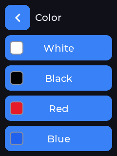
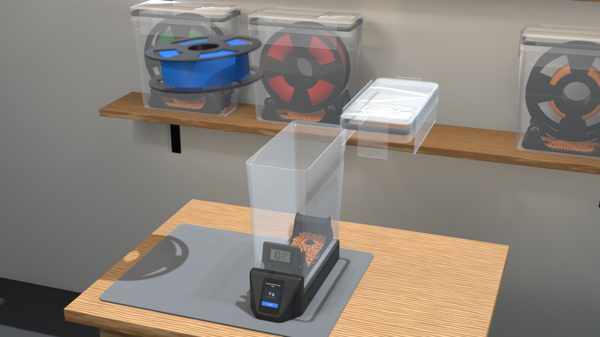

Die Spule ist leer – mitten im Druck.The spool runs out – mid-print.
Du kennst das: eine Spule „müsste noch reichen“, ein Regal voller halber Rollen und eine Tabelle, die nie stimmt. Die Filamentwaage macht aus dem Bauchgefühl eine Zahl und hält sie in Spoolman aktuell.You know it: a spool “should be enough”, a shelf of half-used rolls and a spreadsheet that is never right. The filament scale turns gut feeling into a number and keeps Spoolman up to date.
Halten statt tippenTap instead of type
Spule an die Scan-Zone halten, und die Waage weiß, welche es ist: Hersteller, Material, Farbe und letztes Restgewicht erscheinen sofort. Die Tags sind OpenSpool-kompatibel, ein NTAG216 kostet Centbeträge.Hold the spool to the scan zone and the scale knows which one it is: vendor, material, colour and last remaining weight show up instantly. Tags are OpenSpool compatible, an NTAG216 costs a few cents.
- Neue Tags direkt am Gerät beschreibenWrite new tags right on the device
- Unbekannte Spule? Aus der Spoolman-Liste wählen, fertig verknüpftUnknown spool? Pick it from the Spoolman list, linked for good


Die Box darf wiegen, was sie willThe box can weigh whatever it likes
Die Waage wiegt die Box einmal leer und einmal mit Spule und rechnet die Differenz aus. Das Boxgewicht, Trockenmittel oder andere Spulen darin spielen keine Rolle. Das Leerspulengewicht holt sie sich aus Spoolman.The scale weighs the box once without and once with the spool and takes the difference. Box weight, desiccant or other spools inside do not matter. The empty spool weight comes from Spoolman.
- Wartet, bis der Wert ruhig ist, statt zu ratenWaits for a steady reading instead of guessing
- Warnt bei unplausiblen Werten, bevor etwas gespeichert wirdWarns about implausible values before anything is saved


Dein Inventar, immer aktuellYour inventory, always current
Restgewicht, Lagerort und Besitzer gehen direkt in deine Spoolman-Instanz. Ist der Server gerade nicht erreichbar, merkt sich die Waage das Update und schickt es später nach. Nichts geht verloren.Remaining weight, location and owner go straight into your Spoolman instance. If the server is unreachable the scale remembers the update and sends it later. Nothing gets lost.
- Offline-Warteschlange mit bis zu 100 EinträgenOffline queue with up to 100 entries
- Filament-Katalog gleicht sich automatisch mit Spoolman abFilament catalog syncs with Spoolman automatically


Mehrere Nutzer, klare RechteMultiple users, clear permissions
Jeder bekommt einen eigenen NFC-Tag. Wer sich anmeldet, wird als Besitzer der Spule eingetragen und bekommt die Oberfläche in seiner Sprache. Einstellungen bleiben dem Admin vorbehalten, per PIN oder Admin-Tag.Everyone gets their own NFC tag. Whoever signs in is recorded as the owner of the spool and gets the interface in their language. Settings stay with the admin, via PIN or admin tag.
- Weboberfläche mit Anmeldung, Benutzerverwaltung und LogWeb UI with sign-in, user management and log
- PINs nur als Hash gespeichert, Sperre nach FehlversuchenPINs stored as hashes only, lockout after failed attempts


In vier Schritten zum RestgewichtFour steps to the remaining weight
Spule scannenScan the spool
An die Scan-Zone halten, Spoolman liefert die Daten.Hold it to the scan zone, Spoolman supplies the data.
Box wiegenWeigh the box
Box mit Tag auflegen. Der Box-Name wird zum Lagerort.Place the tagged box. Its name becomes the location.
Spule einstellenInsert the spool
Spule in die Box, die Waage erfasst das neue Gewicht.Spool into the box, the scale captures the new weight.
SpeichernSave
Ergebnis bestätigen, Spoolman ist aktuell.Confirm the result, Spoolman is up to date.
Vorher und nachherBefore and after
Ohne FilamentwaageWithout the scale
- Spulen schütteln und schätzenShaking spools and guessing
- Küchenwaage, Zettel, TaschenrechnerKitchen scale, notes, calculator
- Tabelle, die selten stimmtA spreadsheet that is rarely right
- Wo lag die Spule nochmal?Where did that spool go again?
Mit FilamentwaageWith the scale
- Ein gemessener Wert statt SchätzungOne measured value instead of a guess
- Scannen, Box rein, bestätigenScan, box in, confirm
- Spoolman immer aktuellSpoolman always current
- Lagerort steht in der SpuleLocation is stored with the spool


Günstige Teile, offene BauweiseCheap parts, open design
Alles, was du brauchst, bekommst du bei den üblichen Bastlershops.Everything you need is available from the usual maker shops.
ESP32-S3 + Touch
Waveshare ESP32-S3-Touch-LCD-2, 240×320
WägezelleLoad cell
Biegebalken 5 kg mit HX7115 kg bar load cell with HX711
NFC
PN532 + NTAG215/216
GehäuseEnclosure
3D-gedruckt, Stahl als Ballast3D printed, steel ballast
Teileliste, Pinbelegung und Bauanleitung →Parts list, pinout and build guide →
FAQ
Brauche ich Spoolman?Do I need Spoolman?
Ja, die Waage ist dafür gebaut, Spulendaten aus Spoolman zu lesen und dorthin zurückzuschreiben. Spoolman ist selbst gehostet und kostenlos.Yes, the scale is built to read spool data from Spoolman and write results back. Spoolman is self-hosted and free.
Funktioniert sie ohne Internet?Does it work without internet?
Ja. Die Waage braucht nur dein WLAN und Spoolman im Heimnetz. Es gibt keine Cloud. Ist Spoolman gerade offline, werden Updates zwischengespeichert.Yes. The scale only needs your Wi-Fi and Spoolman on your home network. There is no cloud. If Spoolman is offline, updates are queued.
Welche NFC-Tags brauche ich?Which NFC tags do I need?
NTAG215 oder NTAG216, je einer pro Spule und pro Box. Die Spulen-Tags folgen dem OpenSpool-Format.NTAG215 or NTAG216, one per spool and one per box. Spool tags follow the OpenSpool format.
Wie genau wiegt sie?How accurate is it?
Sie arbeitet mit einer 5-kg-Zelle und einem HX711 und zeigt ein Gewicht erst an, wenn es sich über etwa eine Sekunde um höchstens 1 g bewegt. Die reale Genauigkeit hängt von Zelle, Aufbau und Kalibrierung ab.It uses a 5 kg cell and an HX711 and accepts a weight only once it moved by at most 1 g over about a second. Real accuracy depends on the cell, the build and calibration.
Wie ist der Projektstand?What is the project status?
Die Firmware baut und die Logik ist per Unit-Tests abgedeckt. Der komplette Ablauf mit echter Waage, Box-Tag und Spoolman ist noch nicht abschließend am Gerät geprüft. Es ist ein aktives Open-Source-Projekt, Rückmeldungen sind willkommen.The firmware builds and the logic is unit tested. The complete flow with a real scale, box tag and Spoolman is not fully verified on hardware yet. It is an active open-source project, feedback is welcome.
Bereit für Schluss mit Schätzen?Ready to stop guessing?
Hol dir den Code, druck das Gehäuse, löte drei Module an und leg los.Grab the code, print the enclosure, wire up three modules and go.